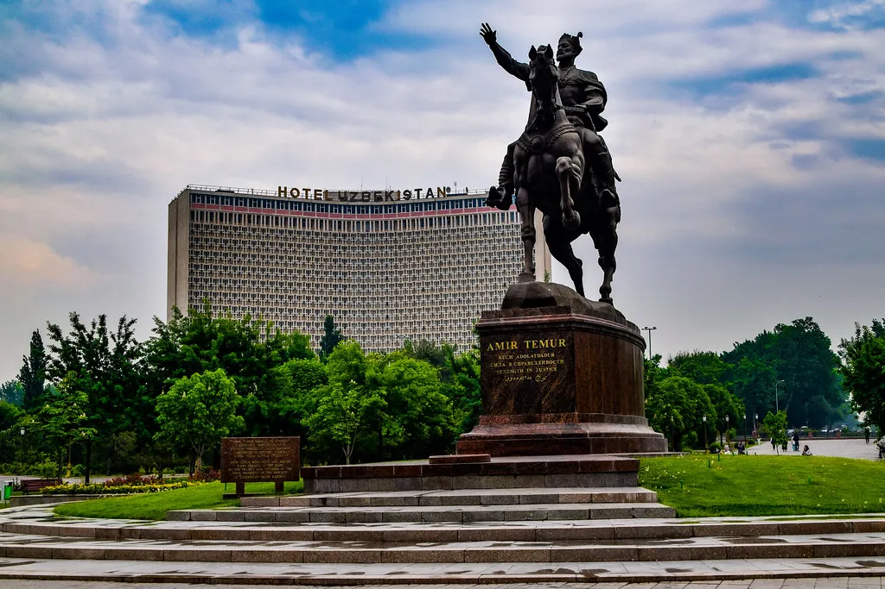
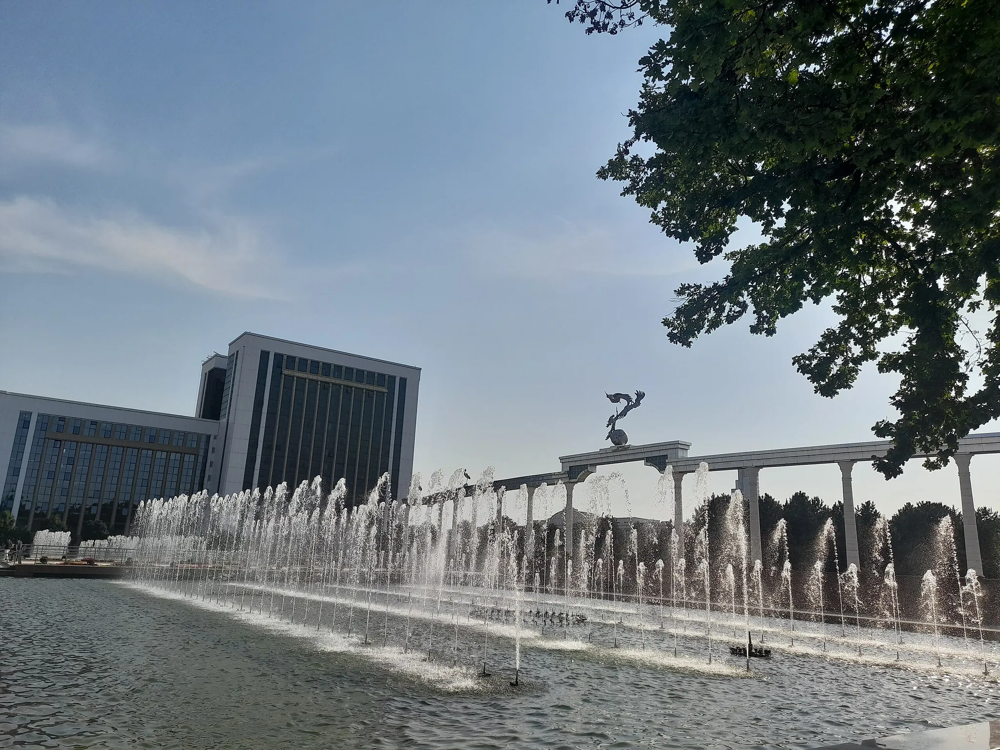
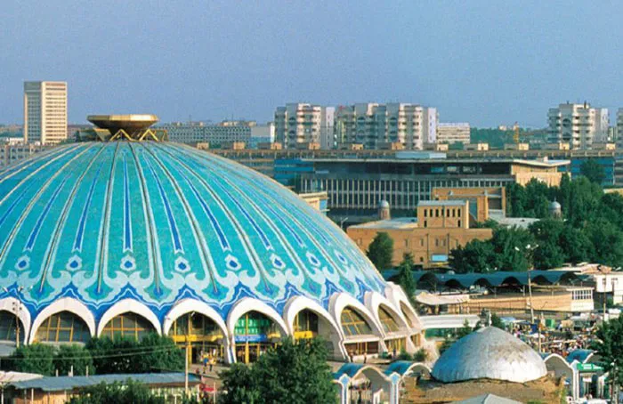

Mening Sevimli Shahrim: Toshkent
1. Amir Temur maydoni
Amir Temur maydoni - Toshkent shahrining markazida joylashgan va shahar tarixining ramzi hisoblanadi. Ushbu maydonda Amir Temur haykali o'rnatilgan.

- Maydon 1882-yilda tashkil etilgan.
- Amir Temur haykali 1993-yilda o'rnatilgan.
- Bu joy shahar aholisi va mehmonlari orasida sevimli sayr qilish maskanidir.
2. Mustaqillik maydoni
Mustaqillik maydoni - Toshkent shahrining asosiy maydonlaridan biri bo'lib, u O'zbekiston mustaqilligining ramzi hisoblanadi. Bu yerda Mustaqillik monumenti va sevgi bog'i joylashgan.

Maydon 1991-yilda Mustaqillik e'lon qilinishi sharafiga qayta nomlangan.
Asosiy haykal "Baxtiyor ona" nomi bilan tanilgan.
Fontanlar va gullar bilan bezatilgan maydon yoz oylarida ayniqsa chiroyli.
3. Chorsu Bozori
Chorsu bozori - Toshkentning eng qadimiy va mashhur bozori bo'lib, u xalq an'analarining haqiqiy timsoli hisoblanadi. Bozor mevalar, sabzavotlar va milliy mahsulotlar bilan to'la.

- Chorsu bozori 1000 yildan ortiq tarixga ega.
- Bu yerda milliy taomlar, masalan, somsa va lag'mon sotiladigan maxsus kafelar bor.
- Bozorning markazida gumbaz shaklidagi bino joylashgan.
4. TV minorasi
Toshkent TV minorasi - Markaziy Osiyodagi eng baland inshootlardan biri bo'lib, u shahar manzarasini balandlikdan ko'rish imkonini beradi. Bu joy turistlar orasida mashhur.
.webp)
- TV minorasi 1985-yilda qurilgan.
- Balandligi 375 metr bo'lib, u dunyoning eng baland minoralari ro'yxatida o'rin olgan.
- Minoraning kuzatuv platformasidan Toshkentning butun manzarasini ko'rish mumkin.
Qo'shimcha ma'lumot uchun
Toshkent haqida Vikipediya maqolasi